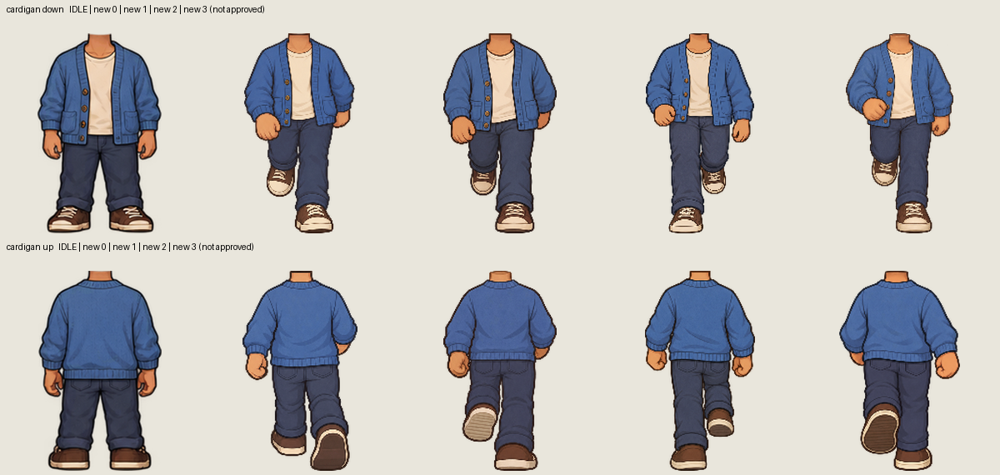

8/152 candidates generated. 0 fail numeric gates. Live art has not been replaced. Raw pixels are unchanged. Seed is unavailable from the built-in tool.

| Garment | Frame | Dominant ΔE (≤6); max cluster shown separately | Outline (≤1.25) | Black edge (<2%) | Result |
|---|---|---|---|---|---|
| cardigan | down/0 | 5.34 (max cluster 35.21) | 0.68 | 0.000% | numeric gates pass; visual review pending |
| cardigan | down/1 | 1.48 (max cluster 22.88) | 0.75 | 0.218% | numeric gates pass; visual review pending |
| cardigan | down/2 | 4.61 (max cluster 13.34) | 0.59 | 1.675% | numeric gates pass; visual review pending |
| cardigan | down/3 | 3.55 (max cluster 29.27) | 0.51 | 0.115% | numeric gates pass; visual review pending |
| cardigan | up/0 | 4.11 (max cluster 12.30) | 0.73 | 0.000% | numeric gates pass; visual review pending |
| cardigan | up/1 | 2.61 (max cluster 2.72) | 0.71 | 0.000% | numeric gates pass; visual review pending |
| cardigan | up/2 | 3.03 (max cluster 3.69) | 0.67 | 0.835% | numeric gates pass; visual review pending |
| cardigan | up/3 | 3.45 (max cluster 3.83) | 0.63 | 0.329% | numeric gates pass; visual review pending |